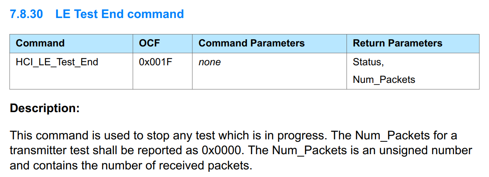
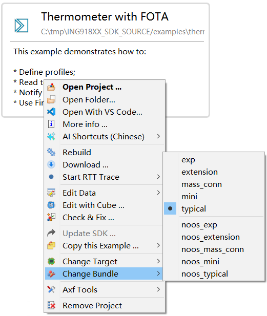

Highlights:
- 支持 ING208xx 系列（软件包、外设驱动、工具、示例）
- ROM 内的协议栈版本与 v9.0.4 相同（在 mass_conn 软件包基础上补充少量扩展功能）。
v9.1.1
1. 软件包
-
[更新] 减少程序启动期间栈空间的大小。
旧版本程序启动期间（
app_main）栈空间的大小约为 0x1f00 字节。新版本改为 0xf00 字节。 -
[修正] EATT 相关问题
2. 库函数
-
[修正] ING208 ADC：解决校准模块问题，并将参考电压调整至标准值
-
[修正] ING208 Eflash：修正因数据类型不匹配导致的
flash_enable_write_protection配置错误 -
[更新] ING208 Eflash：新增 OTP 区域访问接口，支持通过 API 进行读写操作
-
[修正]
-O3编译时的相关问题涉及 SPI、SYSCTRL、
ringbuf等模块。
3. 示例
-
[新增] EAD：演示广播数据加密。
-
[更新] EATT
演示了启用 EATT 功能后各种 Server、Client API 的用法和表现。
-
[更新] Platform Companion：支持使用外部 RTOS
4. 工具
- [修正] Wizard: 针对 ING208xx ROM 的内存设置
v9.1.0
1. 软件包
-
[修正] L2CAP：PSM 发送长度小于 8 的短数据时会自动断开。
此问题由 v8.4.21 引入。
-
[修正] SM: 当从机配对信息被删除时，重新连接，SM 流程完成后无
sm_state_t状态上报。现在会上报
SM_FINAL_FAIL_PROTOCOL。 -
[更新] ATT：增强延迟读取功能
目前延迟读取支持以下命令：
ATT_READ_BY_TYPE_RESPONSEATT_READ_BLOB_RESPONSEATT_READ_RESPONSE
-
[修正] SM：作为主机且使用 L1 Privacy 时，与已配对设备重新连接时，流程异常。
-
[修正] 低功耗：可能进入长时间（约 31 天）CPU IDLE 状态。
-
[新增] LL 开关：
LL_FLAG_TX_TEST_RPT_PKT_NUM设置此开关后，停止 TX_TEST 时，
Num_Packets为发送的数据包的数目。接合接收端上报的数目可计算误包率。
2. 库函数
-
[更新] ING208 Eflash：重新设计了 FT 数据的转存和校验。
-
[更新] ING208 Eflash：增加基于 DMA 的写入方式
定义
FLASH_PROGRAM_WITH_DMA为 1 后启用 DMA 方式。目前默认不使用 DMA 方式。 不使用 DMA 方式时，建议单次写入数据量不超过 32 字节。 -
[更新] ING208 SYSCTRL：
SYSCTRL_Init新增功能：自动使用 FT 数据校准内核电压（项目必须包含
eflash.c）；自动调谐内部高速 RC 至 1.5MHz。 -
[更新] ING208 PINCTRL：使用 ROM 内的管脚数据
-
[更新] ING208/ING916
TMR_WatchDogEnable：改为向上查找合适参数TMR_WatchDogEnable软件接口兼容 ING918，但由于硬件不同，支持的超时参数范围也不相同。旧版本为向下查找合适参数，将导致实际超时时间明显小于所配参数。 -
[修正] ING208
iic.c：有可能通信失败。
3. 工具
-
[更新] Wizard: 支持切换项目使用的软件包类型。

-
[修正] Tracer：无法生成 MSC
此问题由 v9.0.6 引入。